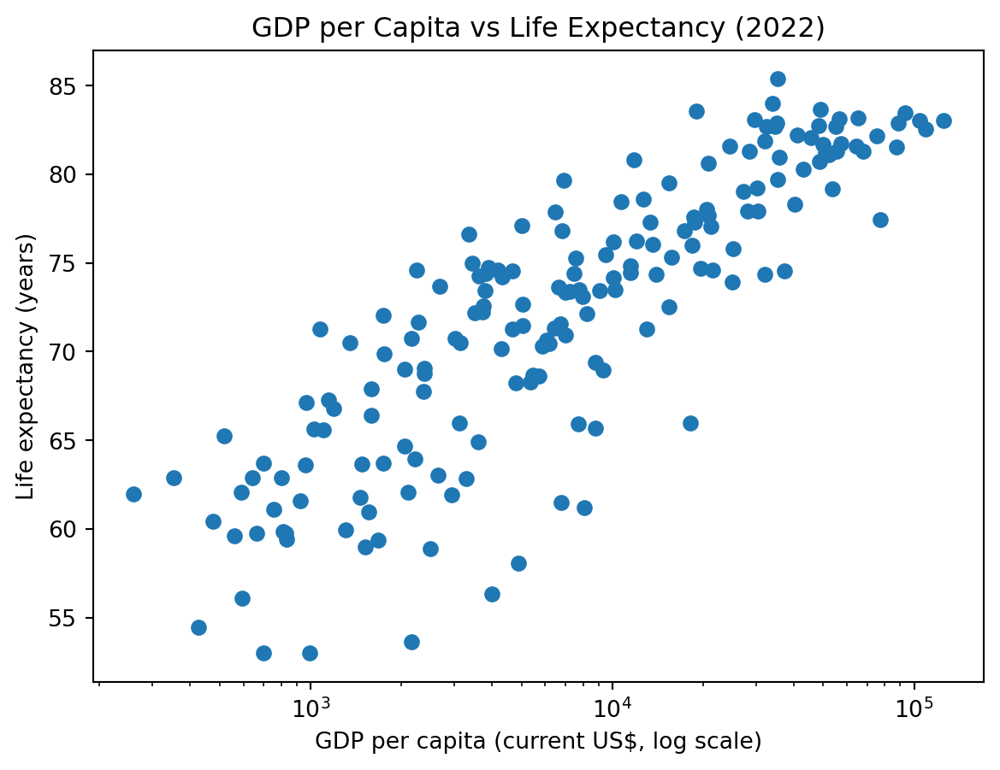
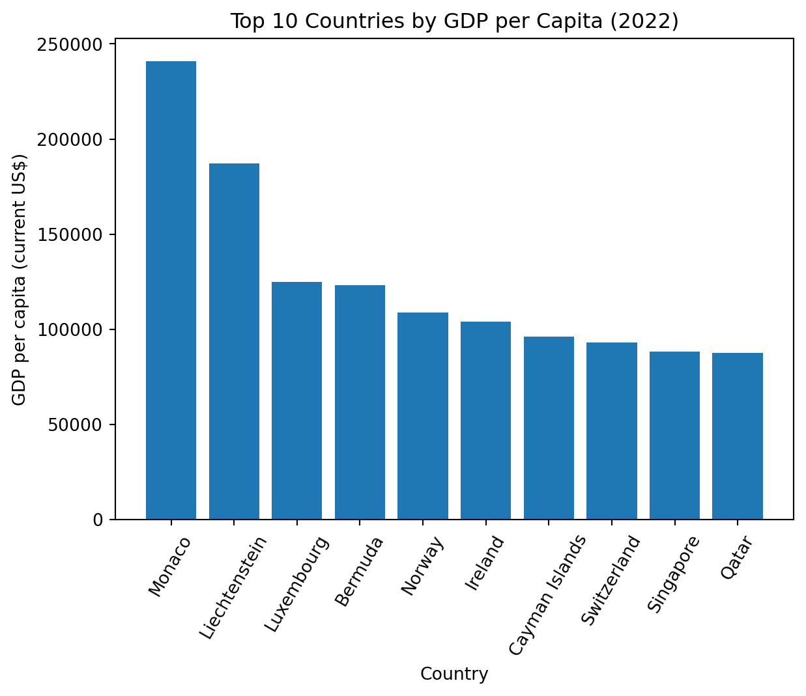

World Development Indicators (2022): A Quick Exploratory Analysis
Author
Oliver Xie
Published
February 25, 2026
1 Overview
This report analyzes a 2022 cross-section of the World Development Indicators (WDI) dataset.
We focus on three indicators:
GDP per capita (current US$)
Life expectancy (years)
Unemployment rate (% of total labor force)
The dataset comes from the World Bank’s WDI program (World Bank 2022). We also reference the classic “Preston curve” relationship between income and health outcomes (Preston 1975).
2 Data loading
import pandas as pdimport numpy as npdf = pd.read_csv("wdi.csv")df.columns = [c.strip().lower() for c in df.columns]# Keep only the columns we use in this reportcols = ["country", "gdp_per_capita", "life_expectancy", "unemployment_rate", "total_population"]d = df[cols].copy()# Basic cleaning: remove rows missing key values for core analysisd_core = d.dropna(subset=["gdp_per_capita", "life_expectancy", "unemployment_rate"]).copy()d.shape, d_core.shape
((217, 5), (179, 5))
3 Exploratory Data Analysis
3.1 GDP per capita
d["gdp_per_capita"].describe()
count 203.000000
mean 20345.707649
std 31308.942225
min 259.025031
25% 2570.563284
50% 7587.588173
75% 25982.630050
max 240862.182448
Name: gdp_per_capita, dtype: float64
Countries vary dramatically in GDP per capita, which motivates using logs.
3.2 Life expectancy
d["life_expectancy"].describe()
count 209.000000
mean 72.416519
std 7.713322
min 52.997000
25% 66.782000
50% 73.514634
75% 78.475000
max 85.377000
Name: life_expectancy, dtype: float64
Life expectancy shows less dispersion than GDP but still meaningful variation.
3.3 Unemployment rate
d["unemployment_rate"].describe()
count 186.000000
mean 7.268661
std 5.827726
min 0.130000
25% 3.500750
50% 5.537500
75% 9.455250
max 37.852000
Name: unemployment_rate, dtype: float64
Unemployment rates show substantial dispersion.
4 Visualizations
4.1 GDP per capita vs Life expectancy
import matplotlib.pyplot as pltx = d_core["gdp_per_capita"]y = d_core["life_expectancy"]
fig, ax = plt.subplots()ax.scatter(x, y)ax.set_xscale("log")ax.set_title("GDP per Capita vs Life Expectancy (2022)")ax.set_xlabel("GDP per capita (current US$, log scale)")ax.set_ylabel("Life expectancy (years)")plt.show()

Figure: GDP per capita and life expectancy (log scale).
Source: World Bank WDI (2022).
fig, ax = plt.subplots()ax.bar(top10["country"], top10["gdp_per_capita"])ax.set_title("Top 10 Countries by GDP per Capita (2022)")ax.set_xlabel("Country")ax.set_ylabel("GDP per capita (current US$)")ax.tick_params(axis="x", rotation=60)plt.show()

Figure: Top 10 countries by GDP per capita.
Source: World Bank WDI (2022).
Table: Descriptive statistics for selected indicators.
6 Conclusion
GDP per capita is strongly associated with life expectancy (see Figure 1).
The income distribution is highly skewed (see Figure 2).
Key statistics are summarized in Table 1.
7 References
Preston, Samuel H. 1975. “The Changing Relation Between Mortality and Level of Economic Development.”Population Studies 29 (2): 231–48.
World Bank. 2022. “World Development Indicators.” World Bank Open Data.